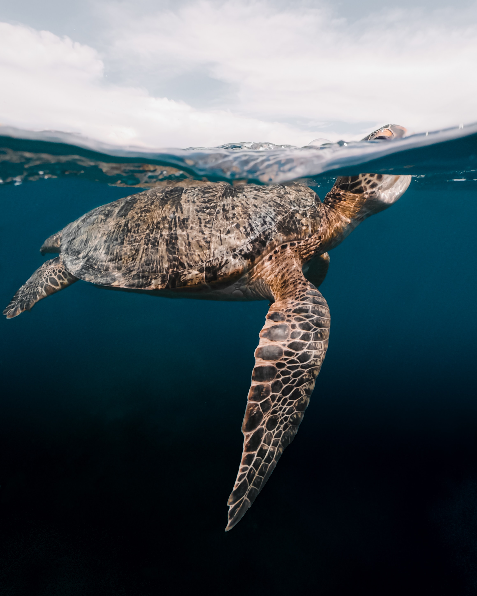

The turtle spieces
There are five species of turtles that can be found in Sri Lanka. they have varying nesting and foraging habits along the country's coastline. It's important to note that the presence and population of these species can vary, and conservation efforts play a crucial role in their protection.